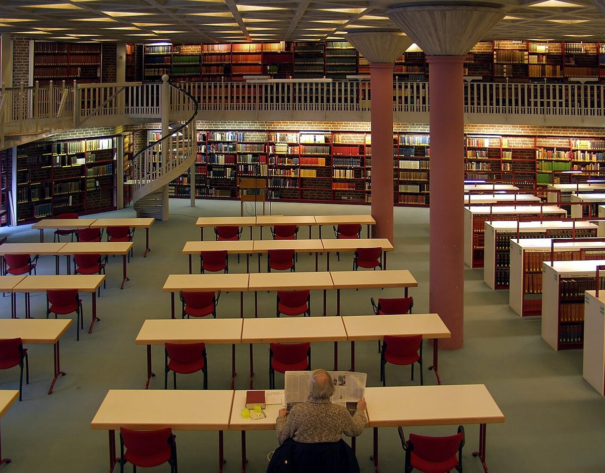

Cologne Cathedral: A Must-See Gothic Masterpiece in Germany

Rising majestically above the Rhine River, Cologne Cathedral (Kölner Dom) is one of Germany's most iconic landmarks. This UNESCO World Heritage Site captivates visitors with its intricate Gothic architecture, rich history, and spiritual significance. Whether you're drawn to religious sites, architecture, or panoramic city views, the cathedral won't disappoint.
Getting to Cologne Cathedral
Cologne is easily accessible by train, with the Hauptbahnhof (main station) located just steps from the cathedral. International travelers can fly into Cologne Bonn Airport (CGN) or Düsseldorf Airport (DUS), both well-connected by public transport. If driving, note that parking in the city center is limited – use park-and-ride facilities.
Best Time to Visit
Spring and autumn offer pleasant weather and fewer crowds. Summer brings festivals but longer queues. Winter visits are magical with Christmas markets surrounding the cathedral. Early mornings or weekdays help avoid peak tourist times.
Top Highlights
1. The Façade & Towers: Marvel at the world's largest church façade and climb 533 steps to the South Tower's viewing platform for breathtaking city and river views.
2. Shrine of the Three Kings: This ornate golden reliquary is said to contain the remains of the Biblical Magi, making it an important pilgrimage site.
3. Stained Glass Windows: Don't miss the stunning 19th-century Bavarian windows and the modern Gerhard Richter window with its pixel-like design.
4. Cathedral Treasury: Houses precious religious artifacts spanning centuries, including medieval sculptures and liturgical objects.
5. Evening Illumination: The cathedral takes on a magical atmosphere when lit up at night – perfect for photos.
Local Food to Try
After exploring, sample Cologne's culinary specialties: Kölsch (the local beer served in small glasses), Himmel un Ääd (black pudding with applesauce and mashed potatoes), and Rheinischer Sauerbraten (marinated pot roast). The area around the cathedral has many traditional breweries and restaurants.
Tips for Your Visit
Dress modestly as it's an active place of worship. Join a guided tour to appreciate the cathedral's history and secrets. Allow at least 2 hours to explore properly. The cathedral is free to enter (towers and treasury have separate fees). Nearby, the Romano-Germanic Museum and Hohenzollern Bridge (love locks) are worth visiting.
Haiktec
- Ultimate NRW City Trip Budget Planner & Itinerary Tracker for Women
- Bavarian Alps & Hidden Gems: A Solo Female Traveler's Guide to Safe & Enchanting Adventures
- Ultimate Wedding Budget & Vendor Tracker
Text mit KI erstellt und automatisch geprueft.